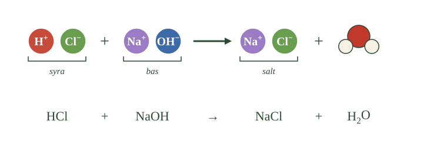
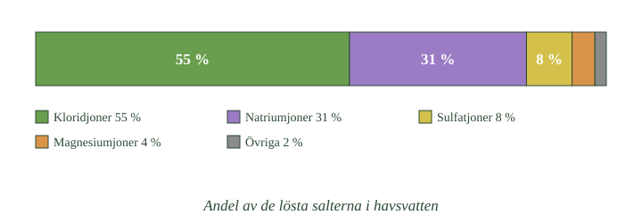

- Salter bildas ofta vid neutralisation
- Syran ger den negativa jonen
- Basen ger den positiva
- Vilket salt som bildas går att förutsäga
- Koefficienterna visar mängdförhållandet
Du vet redan att neutralisation ger salt och vatten. Nu kan du dessutom räkna ut vilket salt.
Var jonerna kommer ifrån
När en syra och en bas neutraliserar varandra reagerar vätejonerna med hydroxidjonerna och bildar vatten.
Kvar blir två joner som inte deltog: en negativ från syran och en positiv från basen. De två bildar saltet.
Det betyder att du kan förutsäga resultatet om du vet vilken syra och vilken bas som använts.
Ett första exempel
Ta saltsyra och natriumhydroxid.
Från saltsyran kommer kloridjoner. Från natriumhydroxiden kommer natriumjoner.
Saltet blir alltså natriumjoner plus kloridjoner — natriumklorid, vanligt koksalt.
- Vilka två joner som kommer från syran
- Vilka två som kommer från basen
- Vilka två som bildar vatten
- Vilka två som blir kvar som salt

Ett exempel med tvåa
Nu ett där det inte går jämnt ut direkt.
Svavelsyra kan avge två vätejoner, medan natriumhydroxid bara ger en hydroxidjon. För att alla vätejoner ska neutraliseras behövs därför två natriumhydroxid på varje svavelsyra.
Tvåan framför NaOH visar att det behövs två. Och tvåan i \(\ce{Na2SO4}\) kommer av att sulfatjonen har laddningen minus två — det krävs två natriumjoner för att balansera den.
Saltet heter natriumsulfat.
Andra sätt
Neutralisation är det vanligaste sättet men inte det enda.
Salter kan också bildas när en metall reagerar direkt med en icke-metall — natrium och klor som bildar koksalt är exemplet från repetitionen. Och de finns naturligt i berggrund och havsvatten.
- Hur bildas salter?
- Vilken jon kommer från syran, och vilken från basen?
- Går det att förutsäga vilket salt som bildas?
- Varför står det en tvåa i vissa formler?
- Finns det andra sätt salter kan bildas på?
Vid neutralisation bildas salt och vatten
Ett vanligt sätt att bilda salter är genom neutralisation. När en syra reagerar med en bas bildas vatten och ett salt.
Vid reaktionen reagerar vätejonerna från syran med hydroxidjonerna från basen och bildar vatten. De övriga jonerna deltar inte utan finns kvar i lösningen.
Den negativa jonen kommer därför från syran och den positiva jonen från basen. Tillsammans utgör de saltet. Avdunstar vattnet blir de kvar som en fast jonförening.
Reaktionen sammanfattas som syra + bas \(\rightarrow\) salt + vatten.
Vilket salt som bildas går att förutsäga
Eftersom man vet vilken jon varje syra respektive bas bidrar med går det att räkna ut vilket salt en viss neutralisation ger.
Saltsyra bidrar med kloridjoner och ger därför klorider. Svavelsyra ger sulfater, salpetersyra ger nitrater och kolsyra ger karbonater. Natriumhydroxid ger natriumsalter, kaliumhydroxid ger kaliumsalter och kalciumhydroxid ger kalciumsalter.
När saltsyra reagerar med natriumhydroxid bildas alltså natriumklorid:
Med samma resonemang ger salpetersyra och kaliumhydroxid kaliumnitrat, och svavelsyra och kalciumhydroxid ger kalciumsulfat.
Koefficienterna visar mängdförhållandet
Alla neutralisationer sker inte i förhållandet ett till ett. Svavelsyra kan avge två vätejoner, medan natriumhydroxid bara bidrar med en hydroxidjon. Det behövs därför två formelenheter natriumhydroxid per molekyl svavelsyra:
Saltet blir natriumsulfat, \(\ce{Na2SO4}\). Tvåan i formeln beror på att sulfatjonen har laddningen 2−, vilket kräver två natriumjoner för att ge en neutral förening.
Koefficienterna framför ämnena i reaktionsformeln visar alltså i vilka mängdförhållanden ämnena reagerar, medan siffrorna i formlerna visar jonernas antalsförhållande i saltet.
Salter kan också bildas på andra sätt, till exempel när en metall reagerar direkt med en icke-metall. Många salter förekommer dessutom naturligt i berggrund och havsvatten.
Fyra sorters salter beroende på ursprung
Standardtexten säger att syran ger anjonen och basen katjonen. Det leder till en indelning som förklarar något du mötte i baserna: att salter inte alltid ger neutrala lösningar.
Kombinationerna är fyra:
Stark syra och stark bas ger ett salt vars lösning är neutral. Natriumklorid är exemplet — varken natriumjonen eller kloridjonen reagerar nämnvärt med vatten.
Svag syra och stark bas ger en basisk lösning. Natriumacetat är exemplet: acetatjonen kan ta tillbaka en proton från vattnet, och då bildas hydroxidjoner.
Stark syra och svag bas ger en sur lösning. Ammoniumklorid är exemplet: ammoniumjonen kan avge en proton till vattnet.
Svag syra och svag bas ger ett utfall som beror på vilken av dem som är starkast.
Regeln bakom
Mönstret har en enkel formulering: den svaga partnern sätter tonen.
En stark syra lämnar efter sig en anjon som är en mycket svag bas — den vill inte ha tillbaka sin proton. En svag syra lämnar efter sig en anjon som är en märkbar bas, och den reagerar med vattnet.
Samma sak åt andra hållet för baser.
Det är därför en titrering av en svag syra med en stark bas hamnar över pH 7 vid ekvivalenspunkten, vilket du mötte i neutralisationens djupdykning.
Om modellen: standardtexten beskriver hur saltet bildas. Vilken pH lösningen sedan får avgörs av om de ingående jonerna själva kan reagera med vatten — och det följer direkt av syrans och basens styrka.
- Salter har höga smältpunkter
- Det beror på att jongittret är starkt bundet
- Många är hårda men spröda
- Elektriskt neutral är inte samma sak som pH-neutral
- Vissa saltlösningar är sura eller basiska
Salternas egenskaper följer nästan alla av samma sak: att jonerna sitter i ett gitter.
De smälter vid hög temperatur
För att smälta ett ämne måste partiklarna kunna röra sig fritt. I ett salt betyder det att hela gittret måste brytas upp.
Varje jon hålls på plats av krafter från alla sina grannar, och de krafterna är starka. Det krävs därför mycket energi.
Natriumklorid smälter först vid 801 grader. Jämför med is, som smälter vid noll.
De är hårda men spröda
Salter är hårda — det är svårt att repa en saltkristall.
Men de är samtidigt spröda. Slår du på en saltkristall spricker den, rent och längs en plan yta.
Det verkar motsägelsefullt men följer av samma sak. Jonerna måste sitta på exakt rätt plats. Förskjuter du ett lager hamnar lika laddningar bredvid varandra, de repellerar, och kristallen stöts isär.
Neutral betyder två olika saker
Här kommer något som förvirrar många, och det är värt att vara noga med.
Ett salt är elektriskt neutralt. Det betyder att de positiva och negativa laddningarna tar ut varandra — summan är noll.
Men det betyder inte att en saltlösning har pH 7.
Vissa saltlösningar är sura eller basiska
En lösning av koksalt är faktiskt neutral, pH nära 7.
Men löser du natriumkarbonat blir lösningen basisk. Och löser du ammoniumklorid blir den sur.
Anledningen är att vissa joner själva kan reagera med vattnet. Karbonatjonen tar upp vätejoner, och då blir det fler hydroxidjoner kvar — lösningen blir basisk.
Att ett salt är elektriskt neutralt säger alltså ingenting om vilket pH dess lösning får.
- Varför har salter höga smältpunkter?
- Varför är de hårda men spröda?
- Vad betyder elektriskt neutral?
- Är alla saltlösningar neutrala i pH-mening?
- Vad avgör vilket pH en saltlösning får?
Höga smältpunkter beror på jongittrets styrka
Salter har ofta höga smältpunkter. Orsaken är att de elektriska krafterna mellan jonerna i gittret är starka, och att varje jon påverkas av flera grannar samtidigt.
För att smälta ett salt måste hela gitterstrukturen brytas upp så att jonerna kan röra sig fritt i förhållande till varandra. Det kräver betydligt mer energi än att smälta ett ämne som består av molekyler, där bara de svagare krafterna mellan molekylerna behöver övervinnas.
Natriumklorid smälter vid omkring 801 °C. Magnesiumoxid, där båda jonerna är tvåvärda, smälter först vid 2852 °C — ett direkt uttryck för att starkare laddningar ger starkare gitter.
Salter är hårda men spröda, och båda beror på samma sak
Salter är också ofta hårda men samtidigt spröda. Hårdheten beror på att jonerna hålls på plats av starka krafter och inte lätt kan förskjutas ur sina lägen.
Sprödheten beror på vad som händer om man ändå lyckas förskjuta dem. När ett jonlager glider ett steg i förhållande till lagret under hamnar laddningar med samma tecken mitt emot varandra. Attraktionen blir då till repulsion, och kristallen stöts isär längs ett plan.
Det är skillnaden mot en metall, där elektronhavet håller ihop strukturen oavsett var jonerna hamnar. Metaller kan därför bucklas medan salter spricker.
Elektriskt neutral är inte samma sak som pH-neutral
Ett salt är alltid elektriskt neutralt. Det betyder att den sammanlagda laddningen är noll, eftersom de positiva och negativa jonerna balanserar varandra.
Det betyder däremot inte att en saltlösning har pH 7. En lösning av ett salt kan vara sur, neutral eller basisk beroende på om de ingående jonerna kan reagera med vatten.
En lösning av natriumklorid är i praktiken neutral, eftersom varken natriumjoner eller kloridjoner reagerar nämnvärt med vatten. En lösning av natriumkarbonat blir däremot basisk, eftersom karbonatjoner kan ta upp vätejoner från vattnet. En lösning av ammoniumklorid blir sur, eftersom ammoniumjoner kan avge vätejoner.
Begreppet elektriskt neutral ska därför inte blandas ihop med neutral i pH-mening. Det första handlar om laddningsbalans i ämnet, det andra om balansen mellan joner i lösningen.
Vad som gör en jon reaktiv mot vatten
Standardtexten säger att vissa joner reagerar med vatten och andra inte. Mönstret går att förutsäga, och det bygger på syra–basparen från baserna.
En anjon reagerar som bas om den kommer från en svag syra. Acetatjonen kommer från ättiksyra, som är svag, och kan därför ta tillbaka en proton. Kloridjonen kommer från saltsyra, som är stark, och tar inte tillbaka någonting.
En katjon reagerar som syra om den kommer från en svag bas. Ammoniumjonen kommer från ammoniak, som är svag, och kan avge en proton. Natriumjonen kommer från natriumhydroxid, som är stark, och gör ingenting.
Reglerna är alltså spegelbilder av varandra.
Metalljoner som gör lösningen sur
Det finns ett fall till som är mindre uppenbart.
Små metalljoner med hög laddning kan göra en lösning sur, trots att de inte kommer från någon bas i vanlig mening. Aluminiumjonen är exemplet.
\(\ce{Al^3+}\) är liten och trevärd, alltså med extremt hög laddningstäthet. De vattenmolekyler som hydratiserar den dras så hårt att bindningen mellan syre och väte försvagas, och en proton kan lossna.
En lösning av aluminiumsulfat är därför märkbart sur.
Det knyter ihop med försurningen: aluminium i sur mark är inte bara ett offer för låg pH utan bidrar själv till surheten.
Därför är sprödheten och hårdheten samma sak
Ett sista resonemang som knyter ihop underdelen.
Både hårdhet och sprödhet följer av att jonerna måste sitta på exakt rätt plats. Hårdhet är motståndet mot att flytta dem lite. Sprödhet är vad som händer när man ändå lyckas.
En metall har inget sådant krav — elektronhavet fungerar oavsett var jonerna hamnar. Därför är metaller mjukare men segare.
Om modellen: standardtexten ger tre egenskaper och tre förklaringar. Alla tre är i själva verket samma förklaring: jonernas position i gittret är avgörande, och allt som rubbar den får konsekvenser.
- Havsvatten innehåller många olika salter
- Natrium och klorid är de vanligaste
- Kroppen behöver joner för att fungera
- Natrium och kalium styr nervsignaler
- Kalcium behövs för skelett och muskler
Salter är inte bara laboratoriekemi. De finns i havet, i berggrunden och i varje cell i din kropp.
Havet innehåller mer än koksalt
Havsvatten smakar salt, och det beror mest på natriumklorid.
Men det är långt ifrån det enda som finns där. Havet innehåller också sulfat, magnesium, kalcium, kalium och en mängd andra joner i mindre mängder.
Räknar man alla lösta salter tillsammans utgör natrium och klorid ungefär åtta tiondelar. Resten är något annat.
- Vilken jon som har det största fältet
- Vilken som har det näst största
- Hur stor del som är något annat än natrium och klorid
- Om de två vanligaste tillsammans bildar koksalt

Varifrån saltet kommer
Salterna i havet kommer framför allt från berggrunden.
Regnvatten är svagt surt och löser långsamt upp mineral. De frigjorda jonerna följer med bäckar och floder ut i havet.
Vattnet avdunstar sedan och bildar nya moln — men jonerna följer inte med. De blir kvar. Över miljontals år har havet därför blivit alltmer salt.
Kroppen behöver joner
I din kropp finns salter lösta i allt vatten — i blodet, i cellerna, i vävnadsvätskan.
De är inte överflödiga. Utan rätt joner i rätt mängder skulle kroppen sluta fungera på några minuter.
Natrium och kalium styr nervsignaler
Natriumjoner och kaliumjoner är avgörande för nerver och muskler.
En nervsignal är i grunden en snabb förflyttning av joner in och ut genom cellens yta. Utan skillnad i jonhalt mellan insidan och utsidan kan ingen signal skickas.
Det är därför både för lite och för mycket salt är farligt.
Kalcium bygger och styr
Kalciumjoner har två roller.
De bygger upp skelett och tänder, där kalcium ingår i den hårda vävnaden.
Och de styr muskelsammandragningar. Varje gång en muskel spänns är det kalciumjoner som utlöser det.
- Vad innehåller havsvatten?
- Varifrån kommer salterna i havet?
- Vilka joner behöver kroppen?
- Vad gör natrium och kalium?
- Vad gör kalcium?
Havsvatten innehåller många olika salter
Salter är vanliga i naturen. Havsvatten innehåller stora mängder lösta salter, framför allt natriumklorid men även många andra.
Bland de vanligaste jonerna finns kloridjoner och natriumjoner, som tillsammans utgör drygt åtta tiondelar av det lösta saltet. Därutöver finns bland annat sulfatjoner, magnesiumjoner, kalciumjoner och kaliumjoner.
Salterna kommer till stor del från vittring av berggrunden. Regnvatten är svagt surt och löser långsamt upp mineral. De frigjorda jonerna transporteras med bäckar och floder ut i havet.
Eftersom vattnet sedan avdunstar medan jonerna blir kvar har havet blivit alltmer salt under mycket lång tid. Salter finns också bundna i bergarter och mineral — kalciumkarbonat i kalksten är ett exempel.
Kroppen är beroende av rätt halter av joner
Salter har stor betydelse också i levande organismer. I kroppen finns joner lösta i blod, cellvätska och vävnadsvätska.
När ett salt finns löst i kroppens vätskor finns det inte kvar som kristaller. Det är uppdelat i sina joner. När vi får i oss natriumklorid är det därför natriumjoner och kloridjoner som transporteras och används.
Rätt halter av olika joner är nödvändiga för att kroppen ska fungera. Både för låga och för höga halter kan ge allvarliga störningar, och kroppen har flera system — framför allt njurarna — som håller halterna stabila.
Natrium, kalium och kalcium har särskilda uppgifter
Natriumjoner och kaliumjoner har avgörande betydelse för nervsignaler och muskelfunktion. En nervimpuls bygger på att joner snabbt förflyttas genom cellmembran, vilket kräver att halterna skiljer sig mellan cellens insida och utsida.
Kalciumjoner har två viktiga roller. De ingår i den hårda vävnaden i skelett och tänder, och de utlöser muskelsammandragningar. Varje gång en muskel spänns är det kalciumjoner som startar förloppet.
Kloridjoner bidrar tillsammans med övriga joner till att reglera kroppens vätskebalans och elektriska balans.
Salterna i kroppen är alltså inte bara närvarande — de är förutsättningen för att nerver, muskler och vätskebalans ska fungera.
Natrium-kaliumpumpen
Standardtexten säger att halterna måste skilja sig mellan cellens insida och utsida. Att upprätthålla en sådan skillnad går emot naturens tendens till utjämning — det kräver arbete.
I varje cellmembran sitter miljontals jonpumpar som gör det jobbet. Den viktigaste kallas natrium-kaliumpumpen.
Den flyttar tre natriumjoner ut ur cellen och två kaliumjoner in, mot koncentrationsgradienten i båda fallen. Eftersom det inte sker spontant måste energi tillföras, och det sker genom att en energibärande molekyl bryts ner för varje pumpcykel.
Det kostar en femtedel av din energi
Räknar man ihop alla celler i kroppen är detta en av de största enskilda energiposterna.
Uppskattningar pekar på att 20 till 25 procent av kroppens energiförbrukning i vila går åt till jonpumpar. Nervceller är särskilt krävande — i hjärnan kan andelen vara ännu högre.
Du förbrukar alltså en betydande del av din mat på att hålla joner på fel sida om ett membran.
Och därför är balansen kritisk
Nu blir det begripligt varför både för lite och för mycket salt är farligt.
Pumparna arbetar mot en gradient. Ändras jonhalterna utanför cellen förändras gradienten, och pumparnas arbete blir antingen otillräckligt eller överdrivet.
Rubbningar i natrium- eller kaliumhalt påverkar därför direkt hjärtats rytm och nervernas funktion, och kraftiga avvikelser är livshotande. Det är också därför kroppen har flera system som håller halterna stabila — njurarna är det viktigaste.
Om modellen: standardtexten konstaterar att kroppen behöver rätt jonhalter. Med pumparna blir det tydligt att "rätt halter" inte är ett tillstånd utan ett arbete som pågår i varje cell, varje sekund, hela livet.
Laddar övningskort…
Laddar frågor ...